Scripted local capture run for the program gate in
docs/research/workshop-garage-program-2026-09.html (package 0.1.302, the top of
the stacked branches G1 to G7 plus the share codes slice, at PR #341 and above).
Driver: scripts/playtest-garage.mjs at Android portrait (390x760) against a local
production build; the shop and saves endpoints simulated at the API boundary (no Postgres
locally), the client, canvas, and sheet are the real build. Captured manually (no VibeReview
CLI session), per the manual-capture provision in AGENTS.md Rule 12. The driver's JSON
summary is playtest-summary.json beside this page.
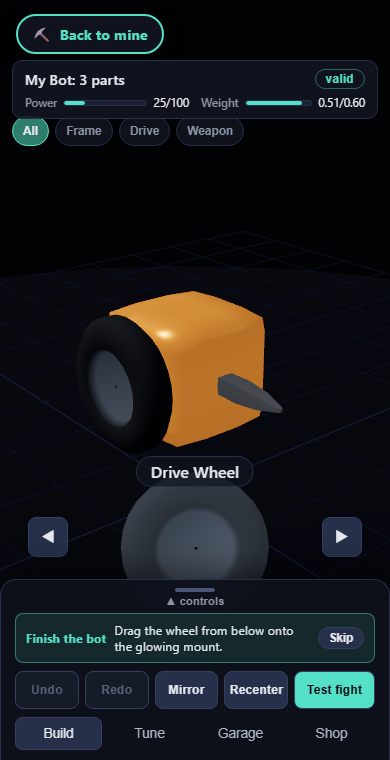
First visit: the guided bot on the front three-quarter camera, live Power and Weight meters, family chips, the coach card, and the thumb bar.
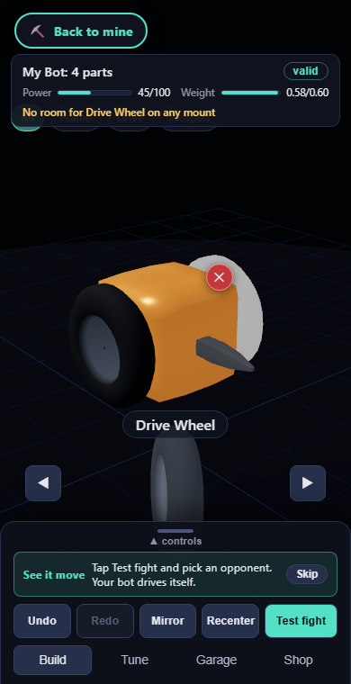
Right after the guided drop: the wheel landed on the far axle, the meters moved, the reason line appeared, and the burst was in flight (read from the canvas, not visible at this size).
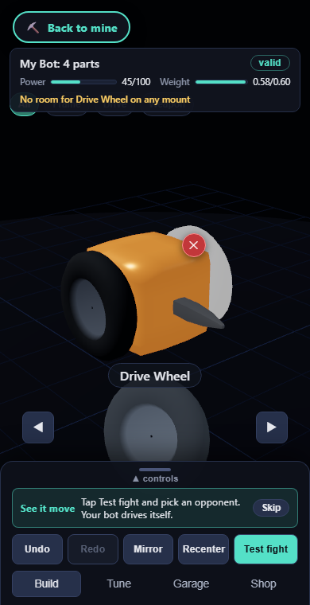
Seven hundred milliseconds later: the coach card advanced to the fight step; the remove handle sits on the new wheel.
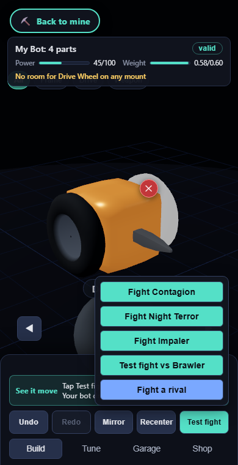
The fight roster off the thumb bar's Test fight button.
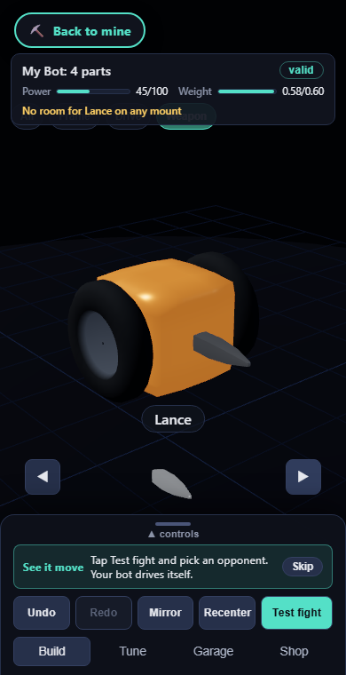
Weapon family chip active, the Lance in hand on the turntable.
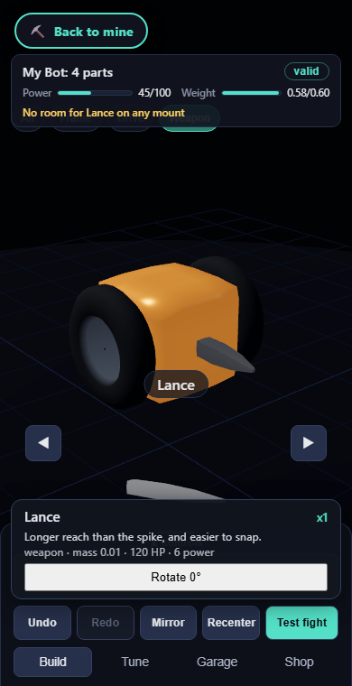
A tap on the hero opens its blurb and stats.
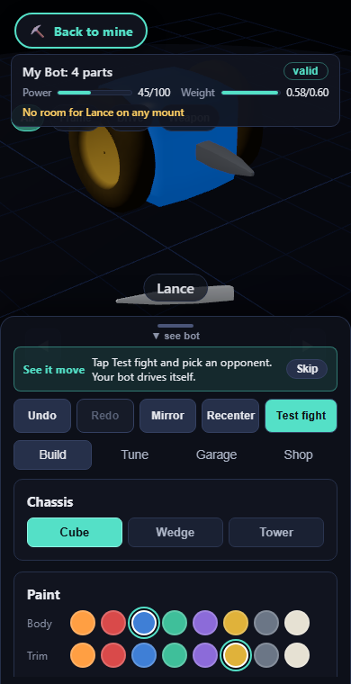
The Paint section: cobalt body, gold trim.
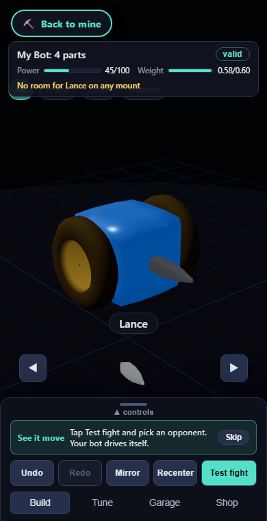
The painted bot on the bench.
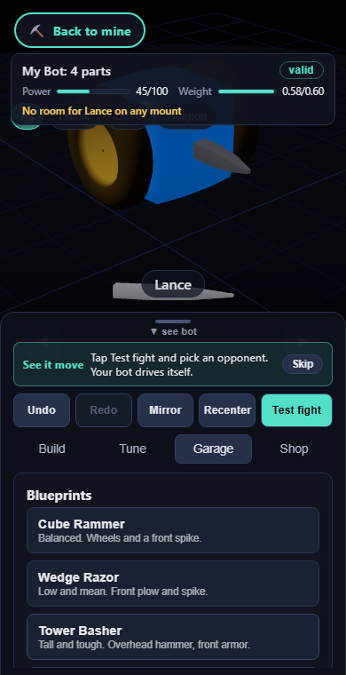
The Garage's Share section with this bot's code.
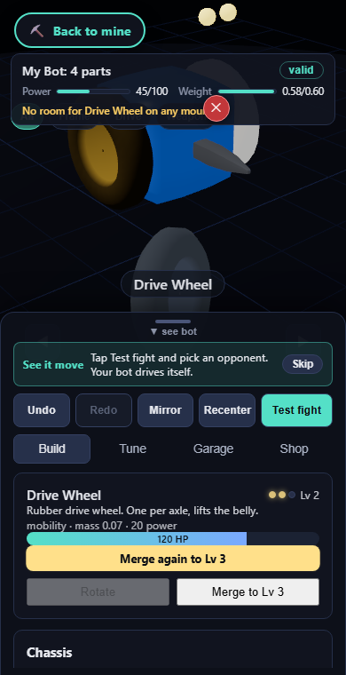
A wheel dropped onto a full axle merges; a copy still in stock brings up Merge again to Lv 3.
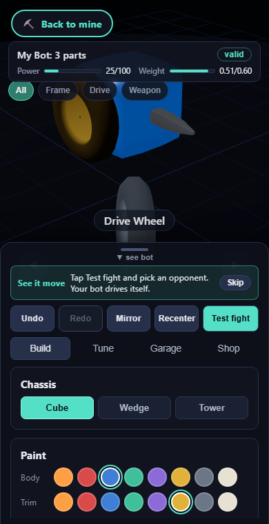
Right after Remove: the ghost dissolves (trace read from the canvas).
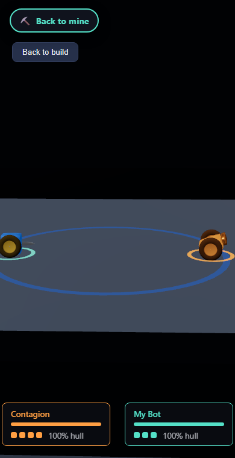
Test fight against Contagion: the painted bot in its paint, team rings under both.